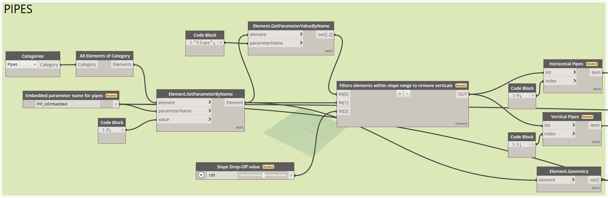

Excel Table Painter

Dynamo Workflows is a powerful tool that allows you to automate and orchestrate complex processes with ease. With its intuitive interface and robust features, you can create, manage, and monitor workflows that streamline your operations and improve efficiency.
Download Dynamo File